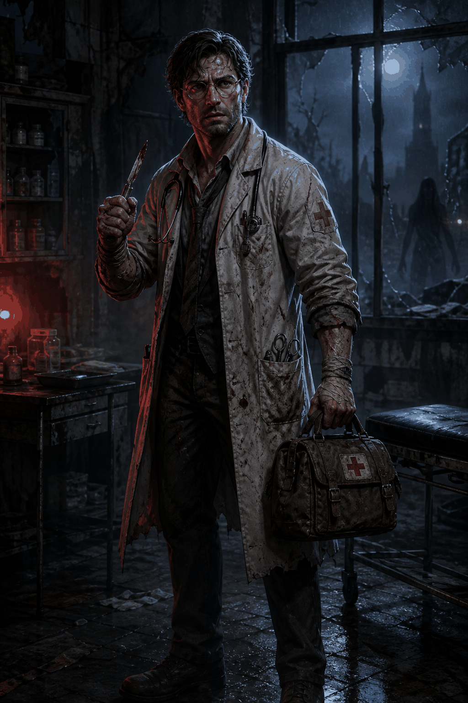
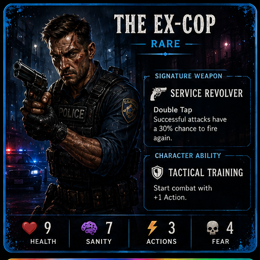
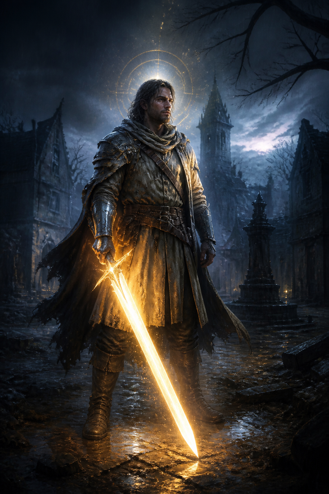
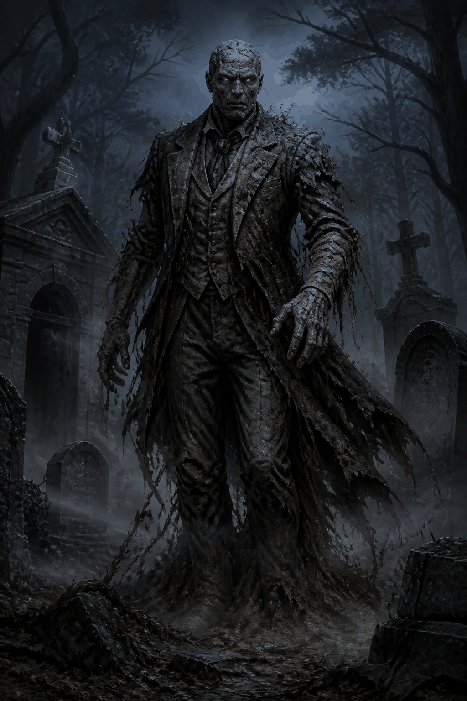
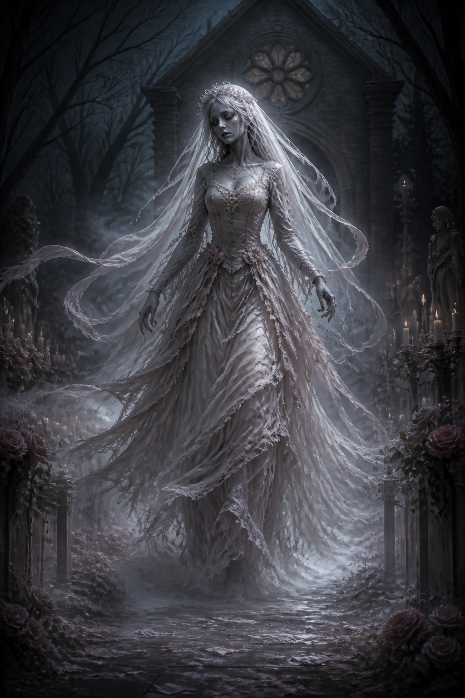
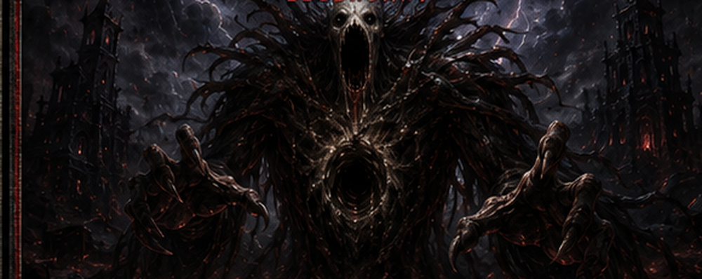

The roads are gone. The radio only whispers your name. Assemble your survivors, uncover Blackwood's buried truth, and make it through ten nights.
Choose your party size. Larger groups offer more skills—but draw more attention.
Three independent local save files. Each slot preserves its own full run.





